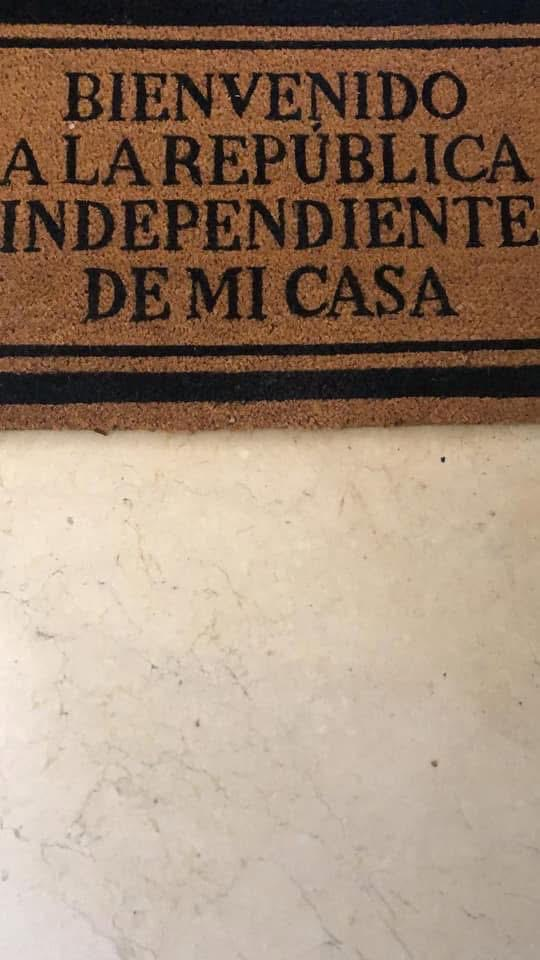
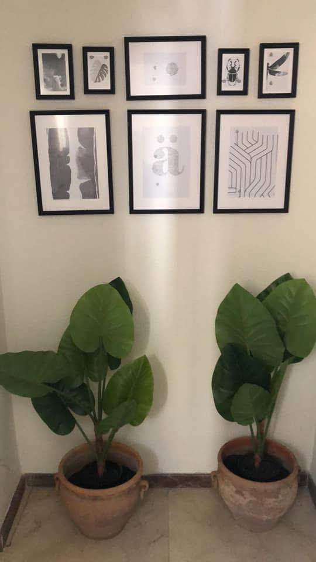
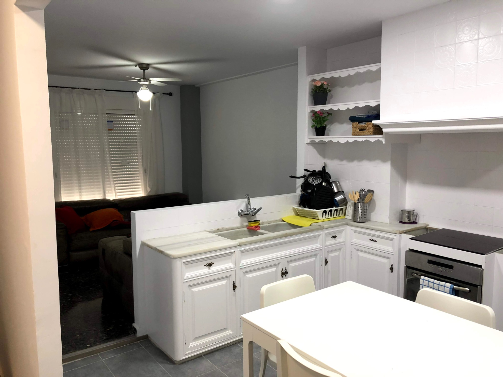
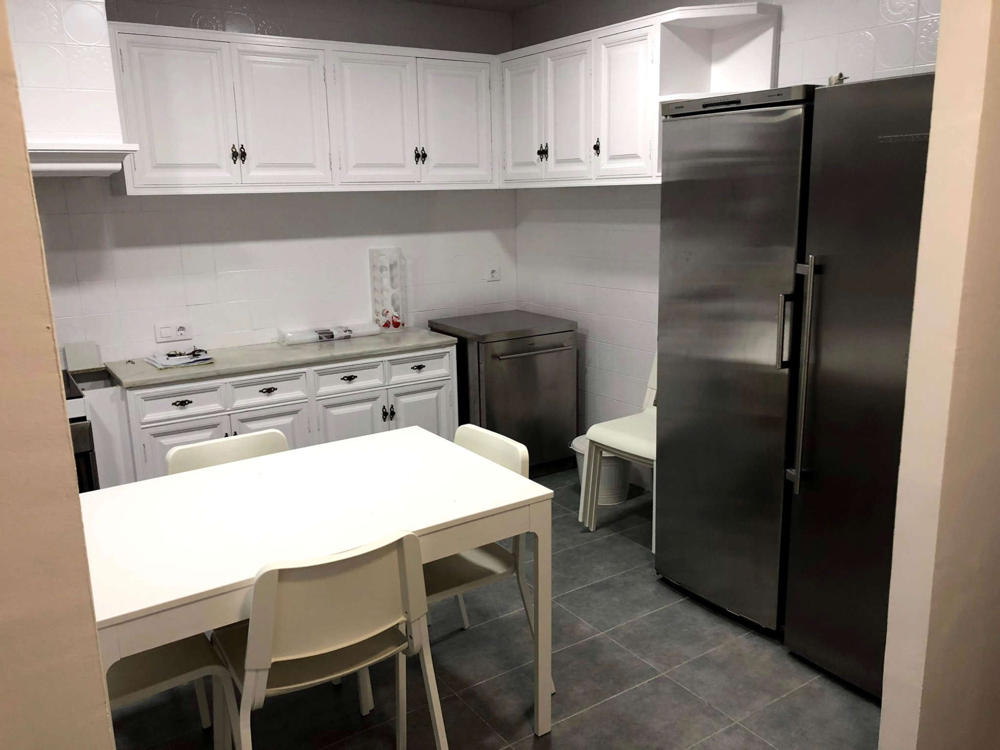
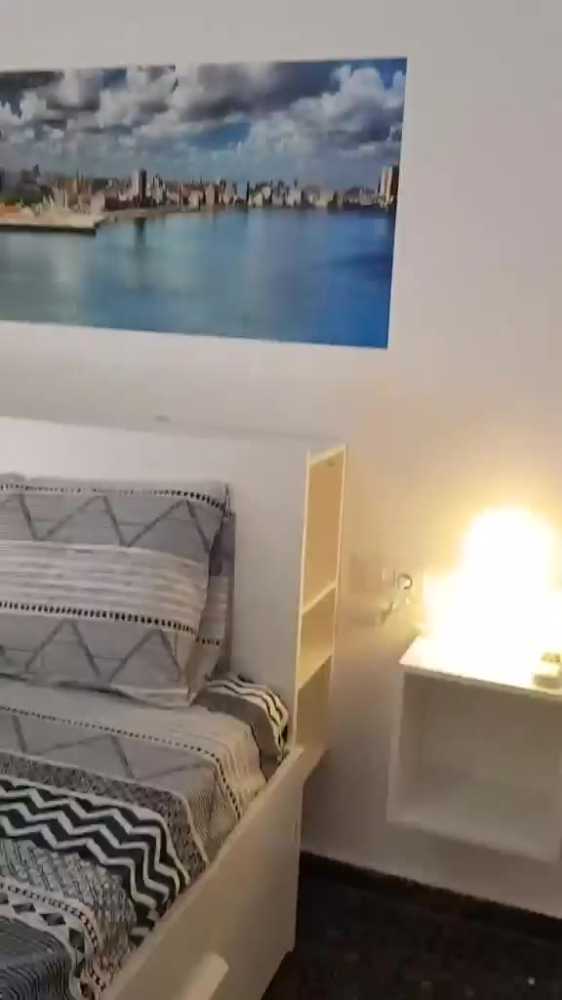
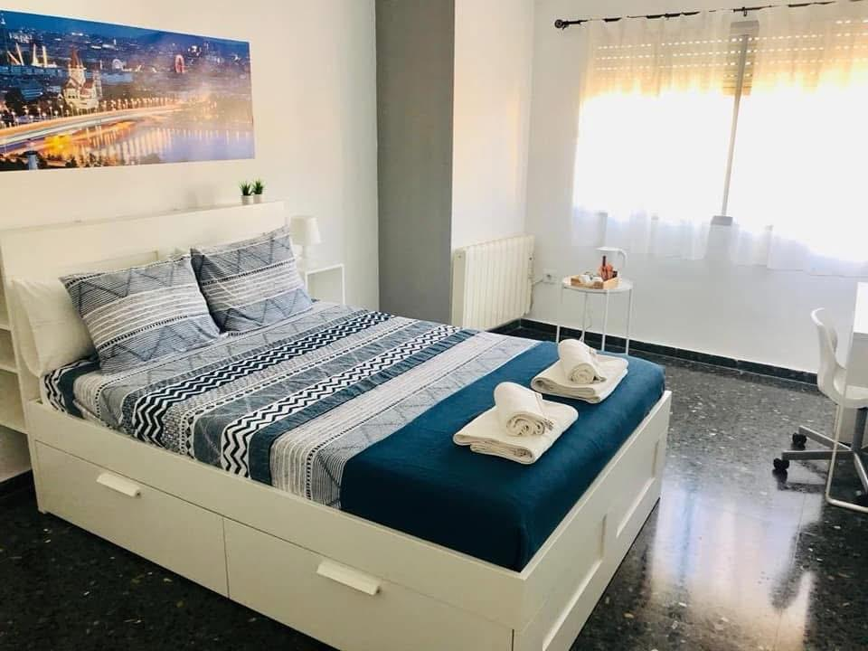
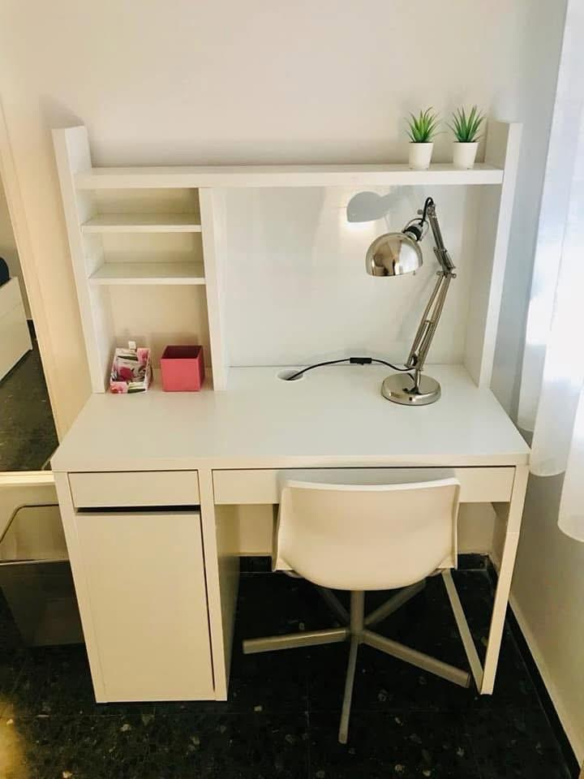
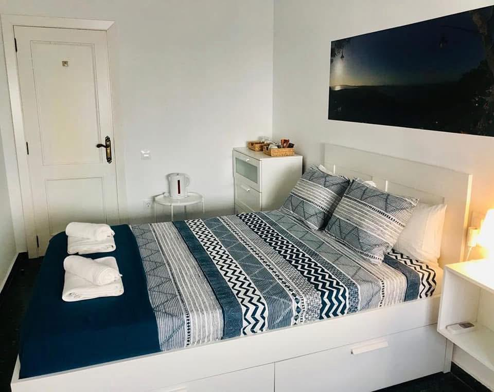

Internet para estudiar
Conexión de alta velocidad de hasta 1 Gbps, por wifi y cable.
RESIDENCIAL GOYA
Siete habitaciones, siete ciudades y un mismo propósito: que cada estancia se sienta como un hogar.
Residencial Goya es un espacio pensado para estudiar, descansar y convivir con tranquilidad, cerca de los servicios esenciales del municipio y de la Universidad CEU.
COMODIDAD PARA EL DÍA A DÍA
Información clara para que sepas qué puedes esperar desde el primer momento.
Conexión de alta velocidad de hasta 1 Gbps, por wifi y cable.
Cama individual, armario empotrado, escritorio, ventilador de techo y calefacción.
Una cocina americana amplia y equipada para organizar el día a día con comodidad.
Un espacio común climatizado para descansar y compartir momentos de tranquilidad.
Lavadora y secadora, además de dos baños completos para el uso diario.
A pocos minutos de la Universidad CEU y de los servicios principales de Moncada.
Limpieza semanal de las zonas comunes para una convivencia más cómoda.
CONOCE LOS ESPACIOS
Desde la entrada hasta cada habitación, los espacios están pensados para combinar intimidad, estudio y vida compartida.
ENTRADA Y PASILLO
Una llegada cálida y cuidada que abre paso a las habitaciones y a la vida diaria de la residencia.


COCINA Y ZONA COMÚN
Cocina americana equipada, comedor y zona común para organizar el día a día con naturalidad.


BAÑOS Y LAVADERO
Dos baños completos y zona de lavado con lavadora y secadora para una estancia más sencilla.

HABITACIONES
Cada habitación lleva el nombre de una ciudad significativa y contiene pequeños detalles que dialogan con ella. Un espacio propio para descansar y concentrarse.



RECORRIDO REAL
Recorre la residencia a tu ritmo: la entrada, las habitaciones, los baños, la cocina y las zonas comunes.
El vídeo muestra la personalidad de las siete habitaciones y los detalles que las vinculan con las ciudades que les dan nombre.
DÓNDE ESTAMOS
Estamos en C/ Goya, 3, Moncada (Valencia). Consulta el mapa para planificar tu visita.
Abrir en Google MapsHABLEMOS
Contacta con Pablo para consultar disponibilidad, concertar una visita y recibir toda la información sobre la estancia.